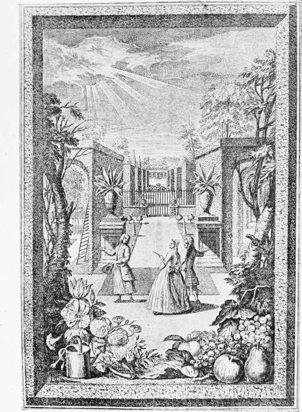

Dawn Of Landscape Gardening. Part 5
Description
This section is from the book "A History Of Gardening In England", by Alicia Amherst. Also available from Amazon: A History Of Gardening In England.
Dawn Of Landscape Gardening. Part 5
The garden thus by means of the ha-ha was becoming merged in the park. In many cases the actual garden was neglected to carry out larger designs in the parks. The changes at Boughton, in the reign of George I., were typical of the times ; the extensive waterworks were done away with, the wilderness was enlarged, and many miles of avenues were planted.
" Who plants like Bathurst ?" wrote Pope, and as Pope was a leader of fashion in planting, we may be sure that Bathurst's method was characteristic of this per10d. It was not a garden he planted at Cirencester, but a park, with miles of avenues skilfully planned, yet all distant from the house, and with but little of them visible from the small garden. The summer-house, where Pope used to sit, and enjoy the beauty of the planting, is where seven avenues diverge more than a mile from the house. A still finer point is two miles further off where ten avenues meet. The same idea was carried out at Badminton, where the avenues extended for miles into the country, and met at a distant point.* This is all quite beyond the scope of a garden, and therefore beyond my subject, but as we have reached the time when, according to Walpole, " Kent leapt the fence and saw all nature was a garden," we were bound to take a glance beyond.
To the lovers of flowers, a garden was always a garden ; under their protection, horticulture and botany were making steady progress, in spite of the new rage for merging the garden in the park. The workers in the practical branches of gardening were many. Richard Bradley, Philip Miller, Thomas Fairchild, and John Lawrence, were among the most famous. Bradley was a very voluminous writer on Natural History, Gardening, and Botany. He entered into various questions concerning the growth of plants, the movements of the sap, and fertilization. " The sap of plants," he wrote, " circulates much after the same manner as the Fluids do in Animal Bodies." On fertilization he says he received "many hints from a gentleman of Paris and Mr. Samuel Moreland . . . how the pollen powder (or male dust) fertilizes the embryo seeds in the ovary." Probably the "gentleman of Paris" was Sebastien Vaillant (1669-1722), who wrote on the subject, and agreed with the theories first propounded by Dr. Grew and Thomas Middleton, Ray, and others, regarding the sexes of plants. Samuel Moreland wrote a paper for the Royal Society in 1703; his theory varying only slightly from the others, as to the process by which the pollen reached the ovary. Scientists made experiments on plants to prove their theories, and practical gardeners were not slow in giving their help. The natural result was that, before long, they succeeded in improving and increasing the varieties of well-known species. Bradley instances examples of cross fertilization, as shown by the changes of colours in auriculas and tulips, and by a plant in Fairchild's garden grown from carnation seed fertilized by the pollen of the Sweet William.
* See Kip's Views, reproduced in Blomfield and Thomas's Formal Garden.
Fairchild's garden at Hoxton was the scene of many experiments. Bradley frequently refers to him as one of the most skilful gardeners of his acquaintance. Fairchild was the author of The City Gardener. In this work he gives a list of evergreens, trees and flowers "which will thrive best in the London gardens," as " everything will not prosper . . . because of the smoke of the sea-coal . . . but," he continues, " I find that most persons whose business requires them to be constantly in town, wall have something of a garden at any rate. One may guess the general love my fellow citizens have of gardening, in furnishing their rooms and chambers with basons of flowers and Bough pots, rather than not have something of a garden before them." In the course of the work he mentions several trees which were then (1722) to be seen flourishing in different parts of London ; the ilex, Spanish broom, guelder rose, syringa and lilac in Soho Square; pears, in several "confined alleys" about Barbican, Aldersgate, and Bishopsgate. A vine bearing good grapes in Leicester fields ; figs in Roll's Garden in Chancery Lane, and in Dr. Bennet's in Cripplegate; lily of the valley in a close place at the back of Guild Hall; plane trees by St. Dunstan-in-the-East, above forty feet high, besides all the numerous" plants seen growing to perfection at Westminster, and "the parts of London near the river." So many curious plants were raised by this enthusiastic gardener in his own garden at Hoxton, that he thought with proper care almost anything would grow in the town. He completes a list by saying, " I am almost persuaded that the olive would do well in London".
The name of Fairchild is still remembered in the part of London in which he lived. "The Fairchild Lecture" is delivered annually in St. Leonard's, Shoreditch, in accordance with the bequest left by him. The subject of the sermon, which is preached on Whit-Tuesday, is either on " The Wonderful Works of God in the Creation," or " On the certainty of the resurrection of the dead, proved by the certain changes of the animal and vegetable parts of the creation." The preacher, appointed yearly by the Bishop of London, still expresses from the pulpit the founder's views.
Fairchild was a member of a Society of Gardeners, and seems to have taken a leading part, as his name stands first upon the list of the members given at the end of the preface of the work published by them, the year after Fairchild's death.* This book is one of great interest. Only one part was published, others were to follow if the first met sufficient encouragement, and that this was not so is much to be regretted. The following gardeners were the joint authors : —
Thomas Fairchild. Robert Furber. Jchn Alston. Obadiah Lowe. Philip Miller. John Thompson. Christopher Gray. Francis Hunt. Samuel Driver. Moses James.
George Singleton. Thomas Bickerstaff. William Hood. Richard Cole. William Welstead. Benjamin Whitmill. Samuel Hunt. John James. Stephen Bacon. William Spencer.
* Gatalogus Plantarum. A catalogue of Trees, Shrubs, &c; for sale in the Gardens near London, by a Society of Gardeners, 1730. The British Museum copy is under Fairchild's name, 452, h. 2.
Title-page of catalogue of the society of gardeners, 1730.
Continue to: